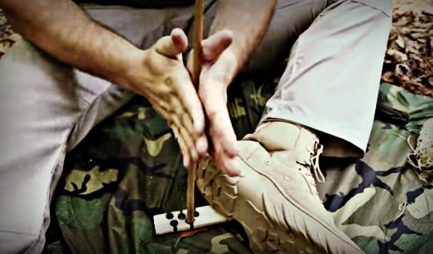
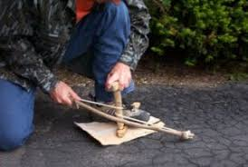
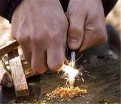

Broca Manual

Uma broca de mão é uma técnica de bushcraft mais simples de construir do que a broca de arco, mas exigirá maior energia, paciência e habilidade para aplicar. Tudo o que é necessário é uma broca e uma madeira como base. O bastão usado para a broca é girado entre as duas mãos (em vez de usar um arco para girar a broca) para gerar atrito suficiente para criar brasas. Vamos fazer um passo a passo:
- No lado plano da prancha, corte uma linha reta no centro usando sua faca de sobrevivência.
- Sulque esta linha para criar um sulco fino e raso, com cerca de 1cm de largura.
- Encontre uma vara de madeira macia, com pelo menos 2cm de largura. Use sua faca para cortar a ponta do bastão em um ponto arredondado, com a ponta pequena o suficiente para caber na ranhura da sua prancha.
- Para causar bastante atrito para gerar calor suficiente para acender um fogo, vamos esfregar as duas peças juntas.
- Aplicando força contínua, esfregue o bastão pela ranhura da madeira, começando em uma extremidade e indo em direção à outra.
- Isso exigirá um pouco de força para criar o atrito necessário para formar uma brasa.
- Quando a vara se esfrega contra a prancha, a madeira raspa lentamente.
- O atrito que você está causando criará calor e minúsculas brasas, que irão inflamar as aparas de madeira.
- Deixe sua ísca pronta e sopre suavemente as faíscas dentro do fogo para acender uma chama.
Arco e Broca

Esse método é mais complicado de construir. No entanto, uma vez que uma broca de arco é construída, requer menos esforço para criar uma brasa utilizável. Vamos dar uma olhada em como construir uma partida de fogo de broca de arco:
- Comece encontrando um pedaço de madeira, rocha ou osso que contenha uma depressão profunda ou superficial. Isso servirá como o soquete que a broca repousa.
- Em seguida, encontre a vara reta que servirá como sua broca. A broca terá que ser um pedaço de madeira de cerca de ¾ de polegada de espessura. Uma extremidade deve ser cega e a outra extremidade será esculpida em um ponto arredondado.
- Faça um pedaço liso de madeira macia, com pelo menos 1 polegada de espessura, para usar como um fireboard. Corte um buraco minúsculo no tabuleiro, a cerca de um centímetro do lado, mal grande o suficiente para a ponta da broca descansar.
- Corte um entalhe triangular conectando o furo ao lado da placa, com a ponta do triângulo conectada ao furo na placa.
- Encontre um palito flexível e verde para fazer um arco.
- Amarre firmemente um pedaço de tendão ou paracord às extremidades tortas do arco.
- Coloque o seu material no entalhe triangular na placa de proteção no passo 4. É aqui que as faíscas se formarão.
- Coloque o pé com firmeza na armação para mantê-lo no lugar. Laço a corda do arco em torno da broca e coloque a ponta da broca no buraco da placa. Pegue o seu soquete da etapa 1 e coloque a depressão no soquete na parte superior da furadeira para segurá-lo firmemente no lugar.
- Puxe o arco para frente e para trás rapidamente. Ao fazer isso, isso fará a broca penetrar na madeira, criando atrito.
- Quando as brasas começarem a cair em seu ninho de iscas, sopre suavemente até que elas se inflamem.
Sílex e aço

Este é o método mais fácil de iniciar todos os tipos de bushcraft. Tudo o que é necessário é uma pedra e um pedaço de aço carbono (como a faca de sobrevivência). O sílex e o aço carbono devem fazer parte de todos os kits de sobrevivência na natureza, já que podem criar brasas facilmente, começando em praticamente qualquer condição:
- A fricção formada pela colisão do aço contra a pederneira formará faíscas.
- Você quer bater o aço contra o sílex com um pulso solto. Pode demorar um pouco de prática para baixar a técnica.
- Tenha a isca pronta para acender quando as faíscas começarem a voar da pedra.
- Sopre suavemente as faíscas que caem no isqueiro ou no pano carbonizado até que ele entre em ignição.
- Certifique-se de ter o seu kindling nas proximidades e pronto para adicionar ao tinder, uma vez que pega.